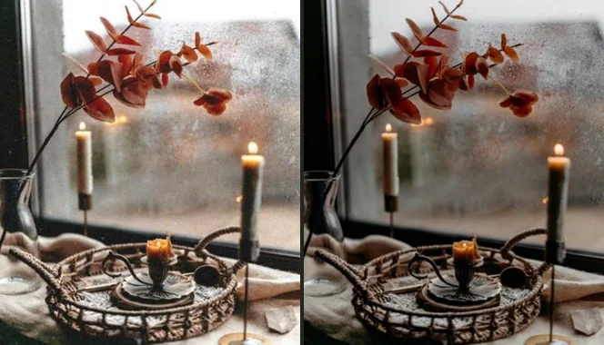
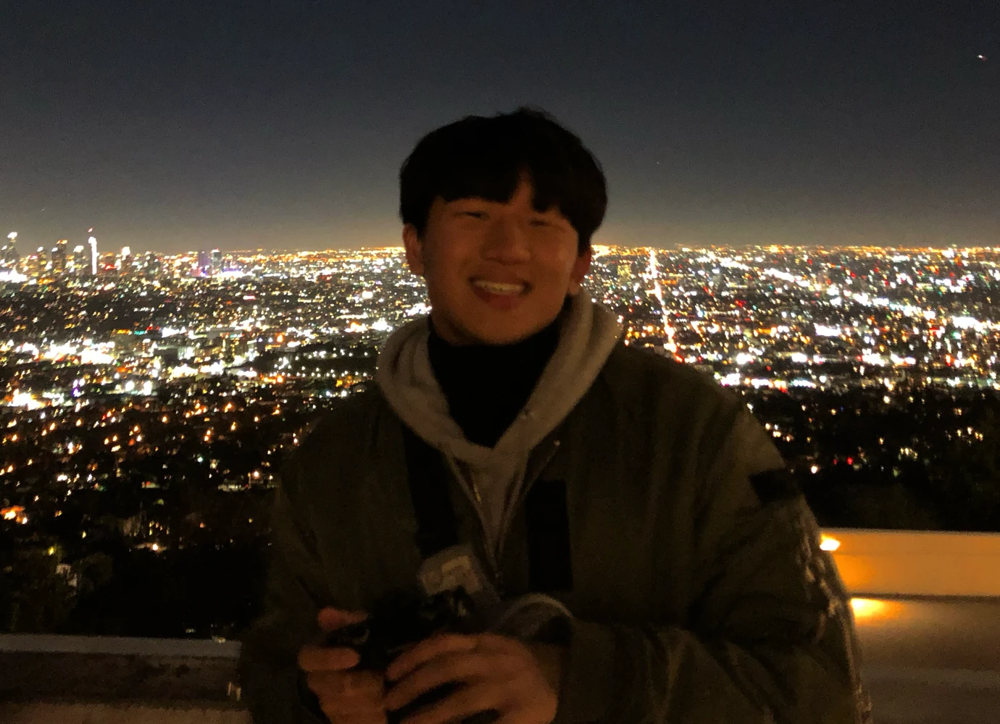
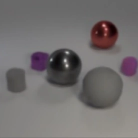
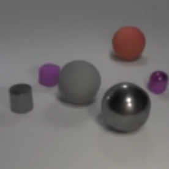

Jinwoo Kim
- Sungkyunkwan University
- 2016–2018
- Yonsei University (B.S.)
- 2018–2021
- Yonsei University (Ph.D.)
- 2021–present

What makes a good photograph?
I’m a Ph.D. student at Yonsei University, advised by Prof. Seon Joo Kim.
I explore what the next generation of photography might look like. I study how editing tools can learn a photographer’s taste from the edits they choose.
One direction I’m drawn to is generative photography
and its potential to make creating and editing images more personal.
I expect to finish my Ph.D. in .
I’m curious to see where this path takes me next.
Selected research
All publications
CVPR 2025
ORIDa
Object-centric Real-world Image Composition Dataset
30,000+ photographs of 200 objects, including matched scenes with and without an object.


CVPR Workshops 2024 · CORR
SlotAug
Towards Interpretable Controllability in Object-Centric Learning
Object representations that let you move, resize, or recolor individual objects in a scene.
Academic service
- Top Reviewer, NeurIPS
- 2026
- Reviewer since 2023
- CVPR, ICCV, ECCV, NeurIPS, AAAI, ICML, TPAMI, TIP
Additional experiences
- Naver Clova Dec 2021 – Jun 2022
- Research Intern, Video Team
- Hyundai Mobis Mar – Jul 2019
- Data Science Team